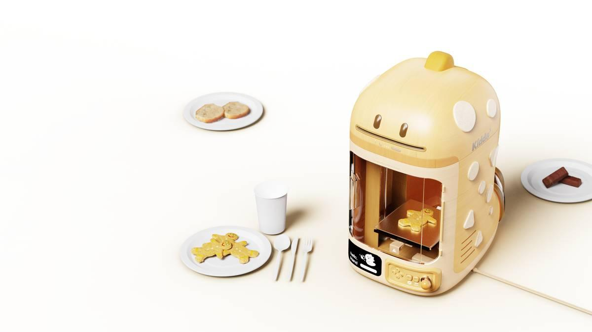
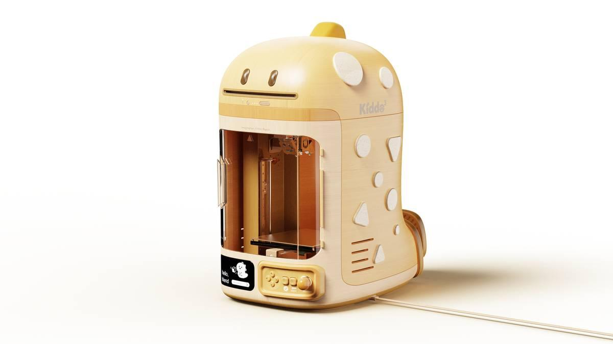
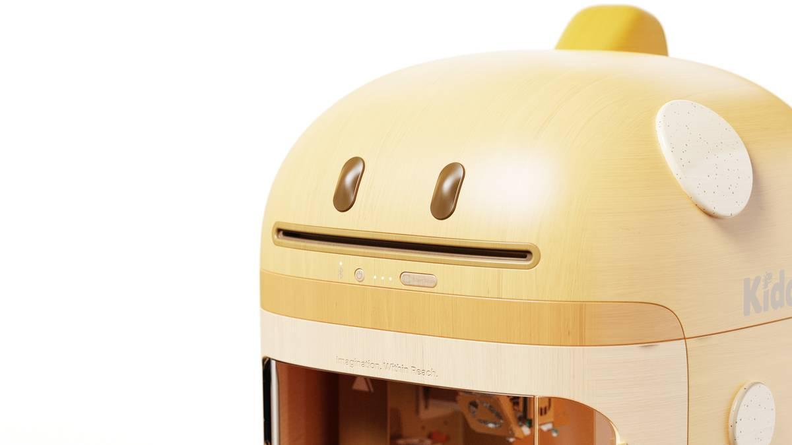
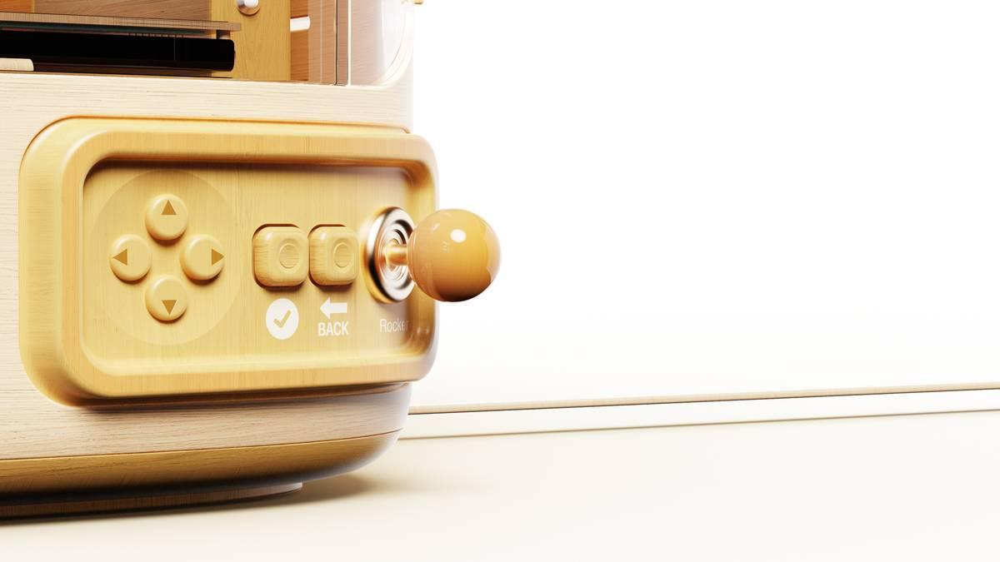
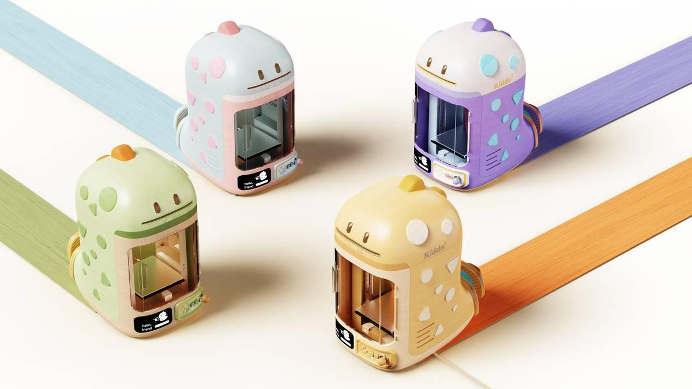
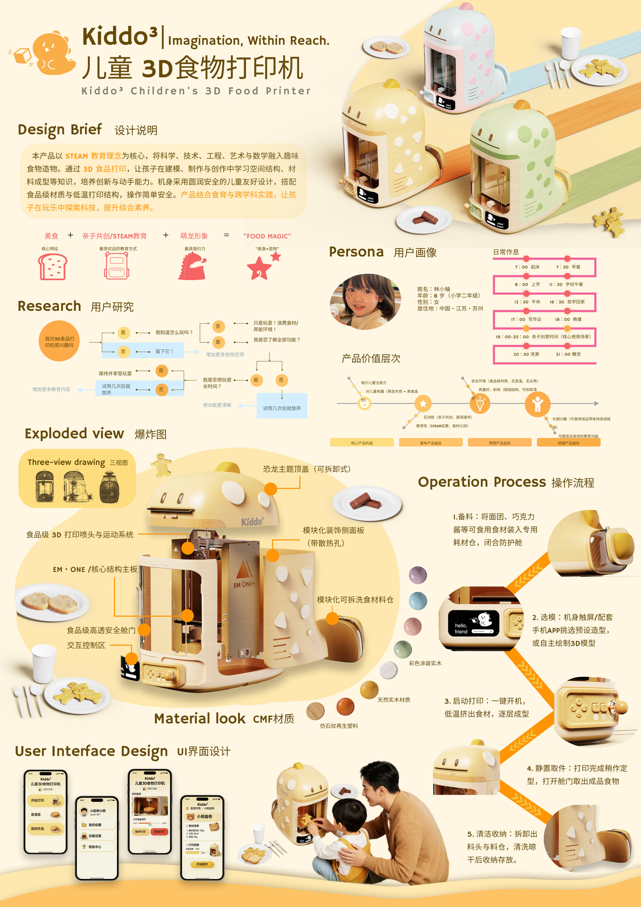

Kiddo³ 儿童 3D 食品打印机
面向6~12岁儿童的STEM教育型智能食品打印机。以"Imagination, Within Reach"为核心理念，将科学、技术、工程、艺术与数学融入趣味食物造物，让孩子在"玩食物魔法"的过程中探索科技、激发创造力。

项目概述
Kiddo³ 是一款面向6~12岁儿童及其家庭的STEM教育型智能食品打印机。产品以恐龙IP形象为视觉核心，将3D打印技术与可食用食材结合，让孩子通过"选模—备料—打印—取件"的完整流程，亲手创造出可食用的饼干、蛋糕、巧克力等创意造型食物。
设计挑战在于兼顾儿童安全与操作趣味性：食品级材料、低温打印、高速安全舱门构筑安全防线；恐龙主题可拆卸顶盖与模块化装饰面板激发探索欲；配套APP支持造型选择与自定义模型上传，实现"从虚拟模型到真实食物"的完整闭环。
产品采用天然实木与仿石纹再生塑料的CMF方案，以温暖奶油黄为主色调，搭配薄荷绿、粉红等马卡龙色系，营造童趣而不失高级感的视觉体验。通过亲子共玩与课堂协作等多元使用场景，Kiddo³ 正重新定义"厨房玩具"的教育价值。
使用工具
设计过程
用户研究与洞察
以8岁儿童林小屿为核心用户画像，通过观察其放学后的手工、阅读、亲子互动等活动模式，提炼出"看得懂、摸得着、有成就感"三大核心需求。调研发现：现有DIY玩具互动性弱、缺乏真实创作成果，家长普遍希望减少屏幕时间、增加动手实践。
创意演变与形态推敲
从几何体块出发，逐步融入拟人化元素，最终确立"恐龙主题"IP形象。通过多轮草图迭代与手板验证，确定蘑菇状机身+透明舱门+模块化组件的整体形态。CMF方案选定天然实木骨架+仿石纹底座+彩色涂装装饰，兼顾安全性、亲和力与辨识度。
结构与交互设计
爆炸图阶段逐层拆解为：恐龙主题顶盖、食品级3D打印喷头、EM·ONE核心主板、高速安全舱门、交互控制区、模块化装饰侧面板、可拆洗食物料仓七大部分。交互层设计手动旋钮+触控屏幕+APP三通道并行，确保不同年龄段儿童均可顺畅操作。
UI设计与用户测试
配套APP围绕"我的作品—食材库—教程中心"三级架构展开，主色调延续奶油黄与马卡龙色系，图标圆润、字体清晰。构建交互原型后邀请家长与儿童参与测试，根据反馈优化了打印进度动画、安全提示弹窗与配方推荐算法。





项目成果
设计创新
以恐龙IP与模块化架构重塑儿童厨房玩具品类，将3D打印技术首次引入家庭亲子场景，实现"从虚拟模型到真实食物"的教育闭环。
安全体系
食品级打印材料、低温挤出工艺、高速安全舱门三重防护，通过结构设计与材料选型构建儿童产品的安全基线，为品类提供可复用的安全设计范式。
教育价值
融合STEAM教育理念，通过"选模—备料—打印—取件—清洁"五步工作流，让儿童在动手实践中理解空间结构、材料成型与工程思维，获得家长与教育者的高度认可。